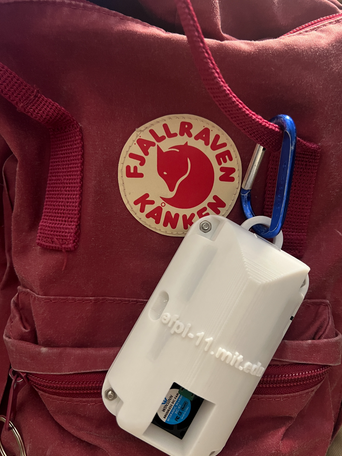

Project — 01
Personal Heat Monitor
This is a personal heat monitor comprised of an ESP32-C3 and an SHT40 temperature and humidity sensor. It is designed to be clipped to a backpack and carried around the MIT campus to get temperature readings, which it then posts to a website so students can see how hot it is at different parts of the campus. This was a team project made for MIT's Engineering for Impact class (6.900). The project consisted of designing the PCB, creating the industrial design, programming the firmware, and creating the website. Check out the website below!